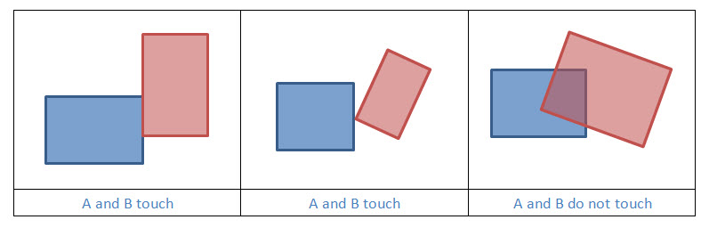
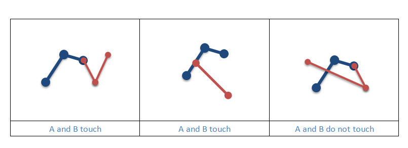
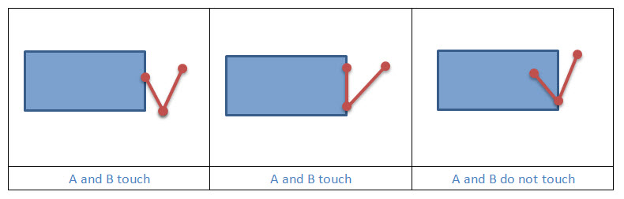
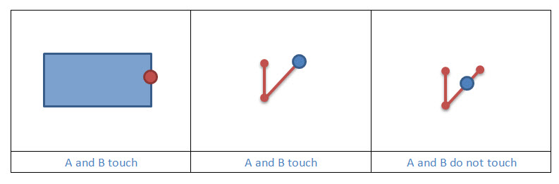

Touches
Two geometries touch if the intersection of their interiors is empty, but the intersection of the two geometries is not empty.
|  |
|  |
|  |
|  |
Example 1: Does Geometry A touch Geometry B?
static boolean geometryTouches(Geometry geometryA, Geometry geometryB, SpatialReference sr)
{
boolean touches = OperatorTouches.local().execute(geometryA, geometryB, sr, null);
return touches;
}